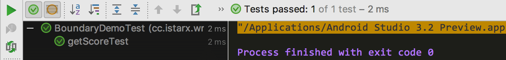

之前对单元测试做了一个简单的介绍，并介绍了但是测试常用的注释。正因为其重要，所以更应该对代码进行单元测试，保证代码运行的正确性。本文就如何编写单元测试做一个简单的介绍。
单元测试用例写法杂谈
当知道了单元测试多么多么重要，多么多么的有用，那么接下来的工作就是着手去写单元测试了。你可能是对目前已有项目上添加单元测试，也可能在一个刚开始进行开发的项目上在开发的过程中添加单元测试，或者你会从测试先行，从测试来驱动开发。
对于开发者来说，采用系统化的开发者测试方法，能最大限度提高发现各种错误的能力，同时让你时间、精力等话费到最少。开发者测试需要做到以下两点：
- 对每一条需求进行测试，确保每一条需求能得到实现。
- 对每一个设计相关点进行测试，确保设计被实现。
这两点在进行开发的过程中可以拆分成一个单元或者一个功能点进行测试。但是在开发过程中究竟是测试先行还是开发先行，不同人有不同的结论。最早在极限编程提出的测试驱动开发(Test-Driven Development，简称TDD)最近几年经过了迅猛的发展，得到了越来越多的关注。谷歌在2017年的 IO 大会上也对TDD进行了专门的介绍。TDD讲究测试先行，测试先行可以将引入缺陷到发现并解决缺陷到时间较少到最短。测试先行即。TDD 提倡在做开发之前先编写测试用例，然后编写使测试代码正确运行的的功能代码，直到功能代码满足所有需求或者设计。
提到测试就设计到一个覆盖率的问题，覆盖又分为分支覆盖、语句覆盖。100%的语句覆盖率固然好，但是更好的是100%的分支覆盖率，即对每个判断语句或者每个分支都取一个真值和一个假值。在同一分支下尽可能的要取值全面，取值全面的含义即是在众多的取值中能尽可能的把错误就出来的取值集合，全面的取值才能达到更完美的测试。
在全面的取值中最需要考虑的就是边界调件，因为大多数程序猿最容易犯的错误或者说是代码运行中最容易出错的地方就是在边界取值的地方，例如有可能把num写成了num - 1或者把<写成<=等等。假如有这样一个 if 语句：
if (num < 10) { |
则对于 if 语句来说，边界条件如下图所示：
则测试用例取值则为：9、10、11三个，如果再考虑极端情况，组需要再添加两个测试用例值：Integer.MAX_VALUE和Integer.MIN_VALUE；
开发先行(TFD)
在大多数情况下，我们都是编写测试用例去测试已有代码。当为达到充分测试，则需要考虑到代码中所有可能情况，包括常规情况和边界情况以及极端情况，并加以排除、优化、合并等，达到 100% 或者更接近 100% 的分支覆盖率。
例如有如下功能代码：
public static int getScore(int num) { |
因为该方法参数只是 int 型的，可以有无限多个取值，在测试时不可能对所有的取值进行测试。针对此种情况需要对参数取边界值以及有限多个正常值进行测试已达到完整的测试，测试情况主要有以下几种情况：
- 对于①处的if语句有一个边界为 num = -1、0 、1；
- 对于②处的语句有两个边界，即为 num = 4、5、 6 以及 num = 9、10、11
- 在②处 if 语句内 有
&&运算，有以下几种情况：- 真 && 真： num = 6；
- 真 && 假：num = 11；
- 假 && 真：num = 4；
- 假 && 假：无取值；
- 考虑极限条件：num = Integer.MAX_VALUE、Integer.MIN_VALUE
去掉重复的取值，测试需要的num取值有 Integer.MIN_VALUE、-1、0、1、4、5、6、9、10、11、Integer.MAX_VALUE, 测试代码如下：
|
运行结果如下：

测试用例的代码覆盖率报告结果如下：
可以看出，代码行的覆盖率都为 100%，其实从上面建立测试用例的时候就可以看出来对于每个分支都覆盖了真假两个值，因此此测试用例的分支覆盖率也为 100%。
测试先行(TDD)
TDD 是一种开发方式，它提倡测试先于开发。即先写出一个失败的测试用例，然后编写使目前所有已编写的测试用例正确运行的开发代码。一直这样循环直到所有的测试用例都正常通过，最后在此基础上进行代码重构和测试用例重构。例如，如果要开发一个计算阶乘方法，整个 TDD 开发过程如下：
-
假设定义一个方法为
calculateFactorial_NotOptimized,完整的签名如下：public static int calculateFactorial(int num) {
return 0;
}由于方法需要返回 int 型的值，初始化情况下返回0；
-
编写一个最基本的测试用例，测试用例命名格式采用
public void should_return_x_when_input_y(),第一个测试用例如下：
public void should_return_1_when_input_0() {
assertEquals(1, Factorial.calculateFactorial(0));
}很明显，0 的阶乘是 1，因此这条用例肯定会失败，既然这条用例失败，则需要修改开发代码，使测试用例可以正常用行。由于开发代码中的初始状态下的返回值是随机指定，因此暂时先将源代码修改为适合输入为 0 的情况：
public static int calculateFactorial(int num) {
return 1;
}修改之后当前测试用例都可以正常运行。
-
添加输入为
1的测试用例如下：
public void should_return_1_when_input_1() {
assertEquals(1, Factorial.calculateFactorial(0));
}1 的阶乘为1，因此这条用例可以正常运行，开发代码不需要进行修改；
-
接着添加输入为
2的用例：
public void should_return_2_when_input_2() {
assertEquals(2, Factorial.calculateFactorial(2));
}该条测试用例的 excepted 值为 2，因此此用例也会运行失败，那么就需要针对此用例修改开发代码，到目前为止，假设除了 0以外，其余情况下输入和输出始终是相等，所以可以将开发代码修改为：
public static int calculateFactorial(int num) {
if (num == 0) {
return 1;
}
return num;
}修改之后测试用例可以正常运行。
-
添加测试用例为 3 的测试用例：
public void should_return_6_when_input_3() {
assertEquals(6, Factorial.calculateFactorial(3));
}同样的，该条测试用例也运行失败了，需要接着修改测试用例。我们我们都知道 n( n >= 2) 的阶乘为：
因此有两种解法，一种是采用
for循环，另外一种是采用递归方法，此处我们修改为以递归的方法实现阶乘，源代码修改为如下：public static int calculateFactorial(int num) {
if (num == 0 || num == 1) {
return 1;
}
return num * calculateFactorial(num - 1);
}此时现有的测试用例都是正常通过的。
-
可是尝试给其它输入编写测试用例，例如 10:
public void should_return_6_when_input_3628800() {
assertEquals(3628800, Factorial.calculateFactorial(10));
}此时测试用例也可以正常运行。
-
到目前为止，我们只考虑了正数，没有考虑负数。我们规定当输入为负数时抛出
IllegalArgumentException异常，并为负数添加一条测试用例：(expected = IllegalArgumentException.class)
public void should_return_6_when_input_negative_1() {
assertEquals(0, Factorial.calculateFactorial(-1));
}在对目前的开发代码进行测试负数时，无论什么情况下都会运行抛出
StackOverflowError错误而不是抛出IllegalArgumentException异常，因此在开发代码中对负数做特殊处理，修改开发代码如下：public static int calculateFactorial(int num) {
if (num < 0) {
throw new IllegalArgumentException("illegal argument.");
}
if (num == 0 || num == 1) {
return 1;
}
return num * calculateFactorial(num - 1);
} -
到目前为止，利用递归的方法求解阶乘的功能已经实现。但是我们都知道求解阶乘是一个非常耗时的方法，因此我们需要为比较大的输入做一个超时测试，例如限定输入为400的时候运算耗时不超过20ms(根据电脑配置可能有所不同)：
(timeout = 20)
public void should_use_less_than_800ms_when_input_Max_value() {
BigInteger res = new BigInteger("64034522846623895262347970319503005850702583026002959458684445942802397169186831436278478647463264676294350575035856810848298162883517435228961988646802997937341654150838162426461942352307046244325015114448670890662773914918117331955996440709549671345290477020322434911210797593280795101545372667251627877890009349763765710326350331533965349868386831339352024373788157786791506311858702618270169819740062983025308591298346162272304558339520759611505302236086810433297255194852674432232438669948422404232599805551610635942376961399231917134063858996537970147827206606320217379472010321356624613809077942304597360699567595836096158715129913822286578579549361617654480453222007825818400848436415591229454275384803558374518022675900061399560145595206127211192918105032491008000000000000000000000000000000000000000000000000000000000000000000000000000000000000000000000000000");
assertEquals(res, Factorial.calculateFactorial(400));
}此时用例会运行失败，失败原因为超过了限定的时间20ms，因此需要对测试用例进行进一步的优化：
public static BigInteger calculateFactorial(int num) {
if (num < 0) {
throw new IllegalArgumentException("illegal argument.");
}
if (num == 0 || num == 1) {
return new BigInteger("1");
}
// return num * calculateFactorial(num - 1);
BigInteger bigIntegerNum = BigInteger.valueOf(num);
BigInteger temp = BigInteger.ONE;
BigInteger res = BigInteger.ONE;
for (BigInteger i = BigInteger.ONE; i.compareTo(bigIntegerNum) <= 0; i = i.add(temp)) {
res = res.multiply(i);
}
return res;
}经过优化代码，现有的测试用例都可以成功执行。
-
到此结束。
小结
无论是开发先行(TFD)还是测试先行(TDD)目的都是为了有健壮、安全的代码，都是为了让错误提前暴露出来而不是暴露在用户手中。TFD 和 TDD 有各自的优点，后者在最近几年来相对比较流行， 受到很多机构或者公司的青睐。在实际项目中使用哪一种方式取决于项目进度、团队成员等。
本文示例代码：Demo
感谢您的阅读，希望可以给你带来帮助。